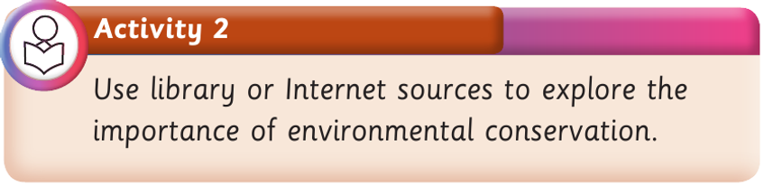

The importance of environmental conservation

An environment that is clean and safe is pleasant, attractive and crucial for our well-being. A dirty environment hides insects and other harmful organisms. The insects and organisms include fleas, flies, mosquitoes, rats and snakes. The insects and organisms usually hide in a dirty environment.
Clean and safe environments prevent the spread of diseases such as skin diseases, diarrhoea, malaria, the bubonic plague and other kinds of diseases associated with a dirty environment. A clean environment that is free from destructive insects prevents damage to crops on farms, food and other kind of property at home. Moreover, a clean environment minimises the effect of climate change. We are supposed to conserve the environment to sustain and restore its quality. Similarly, we conserve the environment to avoid the effects of environmental degradation on human beings and other organisms.